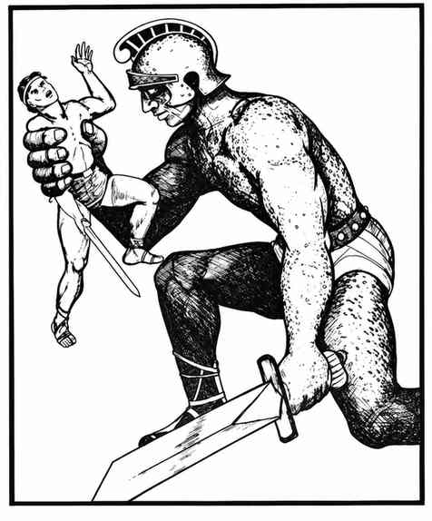

铁魔像 · Iron Golem
 |
|
创造双足人形铁魔像需要魔法典籍，或由 18 级及以上魔法师施展“祈愿术”“任意变形术”“强迫术”与“毒云术”。材料费为每点生命值 1,000 金币，制造需要 3 个月。
铁魔像始终受创造者魔法师控制，能够服从简单命令。它也可以静止不动地守卫，直到发生某个事件，例如门被打开或有人读书。
除普通攻击外，铁魔像每 7 个近战轮可向正前方喷出一次毒气云，范围为 1 寸 × 1 寸 × 1 寸。
铁魔像的力量是肉魔像的三倍，每个近战轮可造成 1 点结构伤害。只有附魔加值 +3 或更高的魔法武器能伤害它；普通武器及低于 +3 的魔法武器都无效。能够影响铁魔像的魔法攻击只有电击（如“闪电箭”），会使它速度减半，持续 3 个近战轮；魔法火焰攻击则每造成 1 点伤害便修复 1 点生命值。铁魔像会受锈蚀怪攻击。